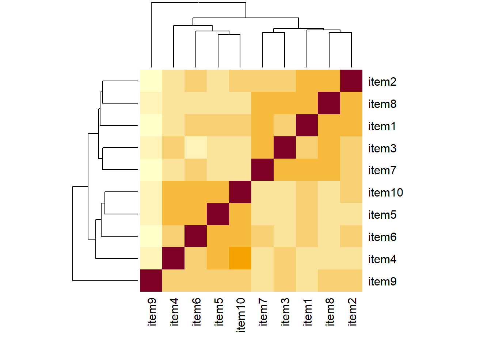
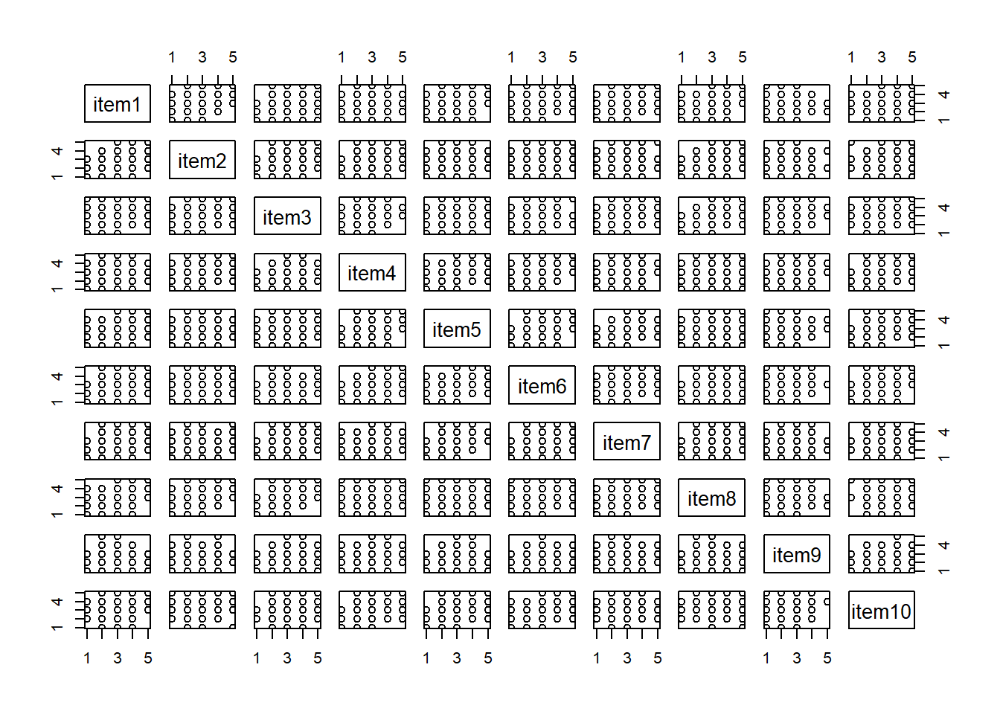
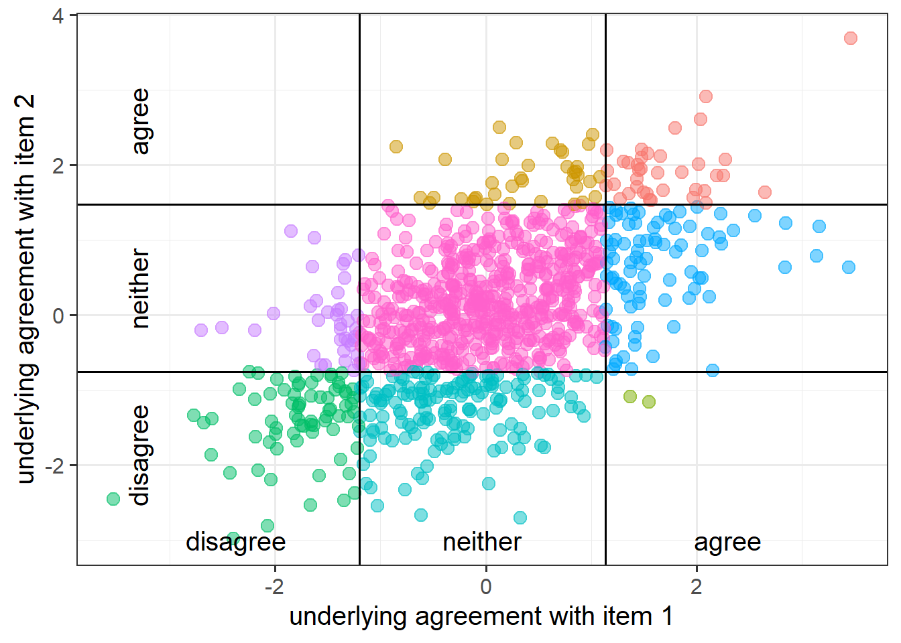
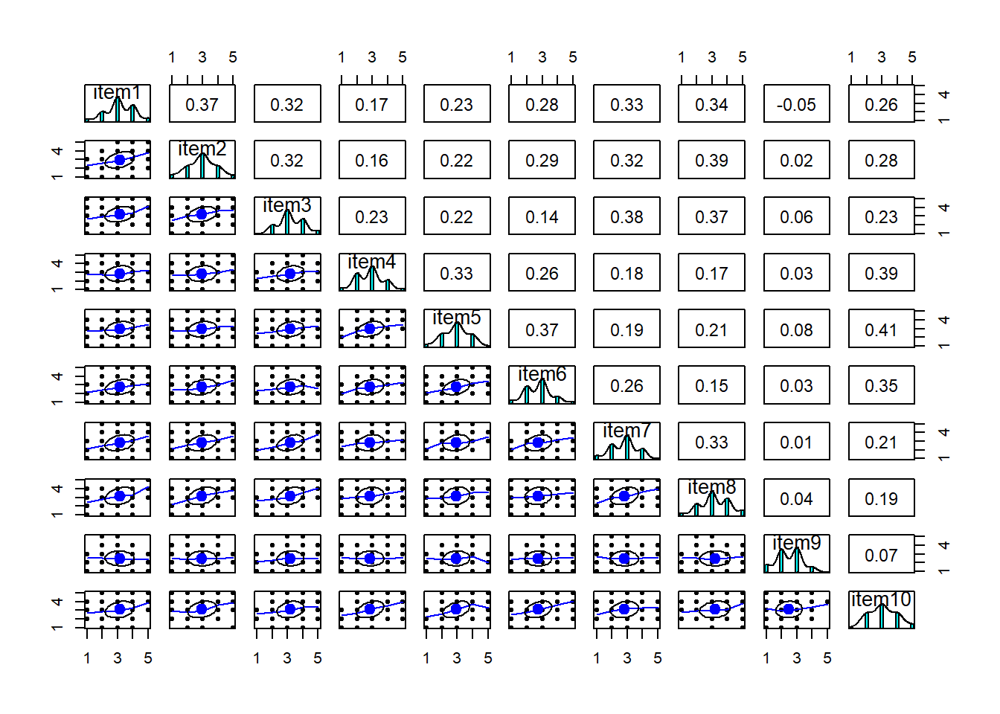

Checking Suitability for Factor Analysis
Overview
There are various ways of assessing the suitability of our items for exploratory factor analysis, and most of them rely on examining the observed correlations between items.
Data
Dataset: phoneaddiction.csv
The dataset at https://uoepsy.github.io/data/phoneaddiction.csv comes from a (fake) study that is interested in developing a measure of “phone-attachment/addiction” - i.e., the idea of being overly attached to a phone.
We have a set of 10 statements (Table 1) that get at different aspects of this idea, and we asked 240 people to rate how much they agreed with each of the 10 statements on a 1-5 scale (1 = strongly disagree, 5 = strongly agree).
phdat <- read_csv("https://uoepsy.github.io/data/phoneaddiction.csv")| variable | question |
|---|---|
| item1 | I often reach for my phone even when I don't have a specific reason to use it. |
| item2 | I feel a strong urge to check my phone frequently, even during meals or social interactions. |
| item3 | I spend a large portion of my day using my phone, often for more hours than I intend. |
| item4 | My phone use has interfered with my ability to complete tasks or responsibilities at school, work, or home. |
| item5 | When I cannot use my phone (e.g., no battery or no signal), I feel anxious or uncomfortable. |
| item6 | My phone use has negatively affected my sleep schedule, such as staying up late scrolling. |
| item7 | I find it difficult to avoid checking my phone immediately upon waking up or right before bed. |
| item8 | I often check my phone even in situations where it's distracting or socially inappropriate (e.g., meetings or classes). |
| item9 | I sometimes feel that others are overly concerned about my phone use in social situations. |
| item10 | I have tried to reduce my phone usage but find it challenging to do so. |
Look at the correlation matrix
Use cor() on the set of items to create the correlation matrix. If it’s a big matrix (they get big quite quickly!) then we can make some sort of visual like a heatmap to get a better sense of the patterns
correlation matrix
Most of the correlations are in the range from 0.2 to 0.4. So they aren’t hugely strong correlations, but they are all related.
cor(phdat) item1 item2 item3 item4 item5 item6 item7 item8 item9 item10
item1 1.0000 0.3662 0.3154 0.1704 0.235 0.2848 0.33327 0.3351 -0.05446 0.2633
item2 0.3662 1.0000 0.3187 0.1628 0.219 0.2936 0.31832 0.3859 0.02236 0.2824
item3 0.3154 0.3187 1.0000 0.2329 0.217 0.1389 0.37925 0.3651 0.05906 0.2299
item4 0.1704 0.1628 0.2329 1.0000 0.332 0.2649 0.18160 0.1661 0.02771 0.3870
item5 0.2348 0.2194 0.2165 0.3317 1.000 0.3730 0.19311 0.2086 0.08096 0.4116
item6 0.2848 0.2936 0.1389 0.2649 0.373 1.0000 0.25692 0.1481 0.03049 0.3549
item7 0.3333 0.3183 0.3792 0.1816 0.193 0.2569 1.00000 0.3271 0.00506 0.2136
item8 0.3351 0.3859 0.3651 0.1661 0.209 0.1481 0.32715 1.0000 0.03707 0.1940
item9 -0.0545 0.0224 0.0591 0.0277 0.081 0.0305 0.00506 0.0371 1.00000 0.0743
item10 0.2633 0.2824 0.2299 0.3870 0.412 0.3549 0.21359 0.1940 0.07434 1.0000correlation heatmap
From the plot below item9 already looks to be a weird one, which is something to keep in mind.
heatmap(cor(phdat))
scatterplot matrix
pairs(phdat)
In psychological research, we spend a lot of time recording responses on a Likert scale (e.g.: “strongly disagree”,“disgree”,“neither”,“agree”,“strongly agree”).
If our measurements have 5+ Likert-like options, it is quite common convention to simply treat them as continuous variables.
But if we have fewer response options (or if people only ever used fewer options), then we don’t want to just use a standard Pearson’s correlation in order to capture the relationships.
Instead we would want to use polychoric correlations, which we can get out the polychoric() function
library(psych)
# get a matrix of polychoric correlations:
polychoric(data)$rhoAnd we can easily then conduct the factor analysis by adding cor = "poly" into the use of the fa() function.
fa(data, nfactors = ??, fm = ??,
rotate = ??, cor = "poly")“Polychoric correlations” are estimates of the correlation between two theorized normally distributed continuous variables, based on their observed ordinal manifestations.

Bartlett’s Test
In the psych package, the function cortest.bartlett() conducts “Bartlett’s test”. This tests against the null that the correlation matrix is proportional to the identity matrix (a matrix of all 0s except for 1s on the diagonal).
- Null hypothesis: observed correlation matrix is equivalent to the identity matrix
- Alternative hypothesis: observed correlation matrix is not equivalent to the identity matrix.
The “Identity matrix” is a matrix of all 0s except for 1s on the diagonal.
e.g. for a 3x3 matrix:
\[
\begin{bmatrix}
1 & 0 & 0 \\
0 & 1 & 0 \\
0 & 0 & 1 \\
\end{bmatrix}
\] If a correlation matrix looks like this, then it means there is no shared variance between the items, so it is not suitable for factor analysis.
For the phone-addiction example, the Bartlett test is significant, meaning that we reject the null hypothesis that our correlation matrix is equivalent to the identity matrix. This is a good thing - we want it to be different in order to justify doing factor analysis.
cortest.bartlett(phdat)$chisq
[1] 408
$p.value
[1] 4.53e-60
$df
[1] 45Kaiser, Meyer, Olkin Measure of Sampling Adequacy
You can check the “factorability” of the correlation matrix using KMO(data) (also from psych!).
- Rules of thumb:
- \(0.8 < MSA < 1\): the sampling is adequate
- \(MSA <0.6\): sampling is not adequate
- \(MSA \sim 0\): large partial correlations compared to the sum of correlations. Not good for FA
These are Kaiser’s corresponding adjectives suggested for each level of the KMO:
- 0.00 to 0.49 “unacceptable”
- 0.50 to 0.59 “miserable”
- 0.60 to 0.69 “mediocre”
- 0.70 to 0.79 “middling”
- 0.80 to 0.89 “meritorious”
- 0.90 to 1.00 “marvelous”
phoneaddiction.csv example:
Overall KMO is good here at 0.83, and individual item KMOs are also looking pretty ‘meritorious’ too! The only thorny one is item9, again!
KMO(phdat)Kaiser-Meyer-Olkin factor adequacy
Call: KMO(r = phdat)
Overall MSA = 0.83
MSA for each item =
item1 item2 item3 item4 item5 item6 item7 item8 item9 item10
0.86 0.85 0.83 0.82 0.83 0.81 0.85 0.83 0.53 0.82 Check for linearity
It also makes sense to check for linearity of relationships prior to conducting EFA. EFA is all based on correlations, which assume the relations we are capturing are linear.
You can check linearity of relations using pairs.panels(data) (also from psych), and you can view the histograms on the diagonals, allowing you to check univariate normality (which is usually a good enough proxy for multivariate normality).
In our phone-addiction example, because these items are measured on likert scales of 1-5, looking at scatterplots can be a bit harder. The red lines on the plots are essentially “smooth” lines, which follow the mean of the variable on the y-axis as it moves across the x-axis. So we want them to all be straight-ish, which they are. We can see from the diagonals of this plot that the items are all fairly normally distributed too.
pairs.panels(phdat)